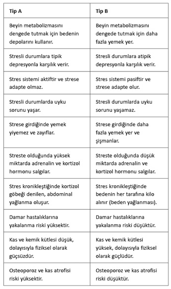

Beynin stres tepkisiyle ilgili
sıkça sorulan sorular

Egoist Beyin ve Kilo kitabımın bu bölümünde sizlerle 10 yıldan uzun zamandır üzerinde çalıştığım yeme bozuklukları konulu çok sayıda seminer, sempozyum, kongre; aynı temalı grup terapileri; binlerce bireysel terapi sırasında ve kitabın hazırlığı aşamasındaki görüşmelerimde en sık karşılaştığım ve ancak bu kitabın okunmasından sonra daha kolay anlaşılabilecek olan soruları paylaşmak istiyorum.
Bazen geceleri uykudan uyanıp yemek yiyorum. Bunun sebebi ne olabilir?
Geceleri ortaya çıkan ve bizi uykudan uyandıran açlık durumu da gündüz yaşadığımızla aynıdır. Uyurken, özellikle de derin uykudayken, beyin enerji tasarrufu moduna geçer, çünkü beyin uykudayken fazla çalışmaz. Beyin uykudayken gün içinde harcadığı enerjinin yüzde 40 azını harcar. Enerji ihtiyacı bu kadar azalmış olmasına rağmen bizi uykudan uyandırıp bu enerjiyi dışarıdan (Body-Pull) almaya teşvik ediyorsa, bu kendi çekim gücünün (Brain-Pull) işlemediği anlamına gelir. Bu sistem işliyor olsaydı, beyin ihtiyaç duyduğu enerjiyi depolardan alırdı. Dolayısıyla gece kalkıp bir şeyler yemek ile gündüz bir şeyler yiyip beynin glikoz ihtiyacını karşılamak arasında prensip olarak bir fark yoktur.
Beynimizin glikoz ihtiyacını sebze ve meyvelerle giderebilir miyiz? Gün içinde çok sebze ve meyve yememe rağmen, neden hâlâ canım tatlı bir şeyler istiyor?
Önce meyveyle ilgili sorunuzu cevaplamak istiyorum. Birçok insan gün içinde fazla meyve yiyerek tatlı ihtiyacını gidermeye çalışır. Aslında bunda bir sıkıntı yoktur. Çünkü meyvenin içerdiği früktoz da vücutta son tahlilde glikoza dönüştürülür. Ancak unutmamamız gereken şöyle bir gerçek vardır ki, o da bizim bir şeyler yediğimizde zevk almamızdır. Dolayısıyla beyninizin glikoz ihtiyacını fiziksel olarak meyveyle gidermeniz, psikolojik bir doyum ve zevk yaşadığınız anlamına gelmez. Yani siz ihtiyacınız olan glikozu meyveden alsanız da canınız yine de çikolata yemek isteyecektir. Çünkü biz sadece fiziksel ihtiyaçları karşılanan bir bedenden oluşmayız; bir de ruhumuz ve onun ihtiyaçları vardır.
İkinci sorunuza gelince... Evet, bazı sebzeler karbonhidrat açısından zengindir. Ama vücuda aldığımız sebze ya da unlu mamullerin içerdiği karbonhidratın bağırsaklarda glikoza dönüştürülmesi belirli bir zaman alır. Oysa beyniniz enerji ihtiyacını hemen ve hızla gidermek ister. Bunu da en hızlı şekilde şekerli yiyecek ve içeceklerle yapabilir, bunlar çok daha çabuk kana karışarak beyne ulaşır. Bundan dolayı beyin çekim gücü zayıflamış insanlarda tatlıya özel bir “düşkünlük” ya da “bağımlılık” vardır. Ama bu, kişinin iradesizliğinden değil, beynin enerji eksikliğinden kaynaklanan bir ihtiyaçtır.
Zayıf insanların kanında kortizol hormonunun yüksek olduğunu söylüyorsunuz. Oysa insanlar kortizon alarak şişmanlıyorlar. Kortizol ve kortizon aynı maddeler değil mi?
Beynin stres sistemi devreye girdiğinde adrenalin ve kortizol üretilir. Sistem böylelikle beyne ihtiyaç duyduğu enerjiyi sağlar. Kortizolün buradaki görevi, stres sisteminin aktivitesini azaltmaktır. Yani kortizolün salgılandığı her durumda stres sistemi aktif haldedir.
Dışarıdan aldığımız kortizon ile vücudun ürettiği kortizol yapısal olarak aynıdır. Ancak aralarında şöyle bir fark vardır: Dışarıdan aldığımız kortizon yatıştırıcı özelliğinden dolayı stres sisteminin aktif hale gelmesini engeller. Yani vücut stres sistemi aktif olduğu için kortizolü üretir. Dışarıdan aldığımızda ise, vücuda bir nevi tuzak kurarak, stres sisteminin aktifleşmesini engelleriz. Böylece stres sisteminin aktifleşmesinden ortaya çıkan birçok semptom yok olur. Ama beyin, stres sisteminin aktivitesi engellendiğinden ihtiyaç duyduğu enerjiyi depolardan çekemez. Bu durumda beynin ihtiyacını yine dışarıdan karşılamak zorunda kalır ve şişmanlarız.
Benim 30 yaşına kadar kilo sorunum hiç olmadı. Hamilelik döneminde 15 kilo aldım ve bu kiloları aradan altı yıl geçmiş olmasına rağmen veremediğim gibi kilo almaya devam ettim. Bu duruma ne diyorsunuz?
Hamilelikte de kilo alımına neden olan şey kortizol hormonudur. Fizyolojik olarak hamile bir kadının stres sistemi her zaman normalin daha altında çalışır. Bundan dolayı hamileliğin son haftalarında kadınlar strese karşı duyarsızlaşır. Bu, doğanın anne karnındaki çocuğu koruma stratejilerinden biridir. Mesela bu dönemde kadınlar soğuğa karşı duyarsızdırlar. Bundan dolayı soğukla temas ettiklerinde vücutlarındaki kortizol hormonunda bir artış olmaz. Stres sisteminin hamilelikte iyi çalışmamasının bir başka nedeni de beynin çekim gücünün devre dışı kalmasıdır. Zira ancak bu güç devre dışı bırakıldığında hamile kadın daha fazla yemek yer. Hatta bazen yeme atakları bile geçirir. Fazla yemek yemek hem annenin hem de bebeğin yararınadır. Çünkü böylece her ikisinin de beyni ihtiyaç duyduğu enerjiyi elde edecektir. Ayrıca annenin vücudunda biriken yağ depoları bebeği emzirme döneminde gerekli olacaktır.
Hamilelikte anne beyninin çekim gücünün devre dışı kalmasını sağlayan bebeğin beynidir. Anne karnındaki fetüsün her ne kadar kendi özgür kan dolaşımı olsa da, bu, plasenta aracılığıyla annenin kan dolaşımıyla bağlantılıdır. Gelişimi için neredeyse yalnızca glikozla beslenen fetüsün böbreküstü bezleri, bu maddede bir eksiklik olduğunda kortizol salgılar.
Fetüsün salgıladığı kortizol, plasentada CRH (cortisone releasing hormon) hormonuna dönüştürülerek annenin kan dolaşımına aktarılır. CRH annenin böbreküstü bezlerinin de kortizol salgılamasına yol açar. Annenin salgıladığı kortizol, beynin çekim gücünü devre dışı bırakır ve anne daha fazla yemek yer. Kısacası fetüsün ürettiği kortizol, annenin bedenine dışarıdan alınan kortizon gibi tesir eder ve anne fazla yemek yer. Bütün bu olguları göz önünde bulundurduğumuzda kadınların hamilelikte neden fazla yemek yediklerini anlamış oluruz.
Uzun yıllar hiç kilo sorunum olmadı. Hatta düzenli spor yapıyordum ve son derece atletik biriydim. Şimdiyse 30 kilo fazlam var. Hangi diyeti denediysem olmadı. Ama siz zaten diyetlerle bu işin olmayacağını söylüyorsunuz. Peki ben yeme alışkanlığımı değiştirmeden, yalnızca spor yaparak zayıflayabilir miyim?
Evet, diyetlerin insanları zayıflatmadığı gibi şişmanlattığını ve hastalandırdığını söylüyorum. Spora gelince; spor yapmak da aslında insanı zayıflatmaz, yalnızca yağların azalmasını ve kas dokusunun artmasını sağlar. Sizin sporla zayıflamanız mümkün değil. Bunun nedenini anlamamız için tekrar beynin çekim gücüne bakmalıyız:
Spor yapmaya başladığımızda kaslar kandaki glikozu çekip laktata dönüştürürler. Bu madde hem bedenin hem de beynin enerji kaynaklarından biridir. Yani kaslar glikozu laktata dönüştürdüklerinde kaslar ile beyin arasında bir rekabet oluşur. Çünkü her ikisi de spor yaptığımız esnada bu maddeye ihtiyaç duyar.
Çekim gücü normal işlediğinde beyin kaslara bir emir göndererek, laktatı yakmayıp kendisine göndermesini sağlar. Bu emirle kaslar laktatı kana salgılar ve enerji beyne gider. Beyin spor esnasında tükettiği enerjiyi laktatla telafi eder. Ama beyin aynı zamanda da yağ dokularına bir emir vererek, yağ asidi salgılanmasını sağlar. Beynin metabolizması için hiçbir önemi olmayan bu madde kaslar için bir enerji kaynağıdır. Yani beyin kaslardan laktatı alır ama bunun yerine onlara yağ asidi temin eder. Böylelikle hem beyin hem de kaslar ihtiyaç duydukları enerjiye sahip olurlar ve kişi spor yapabilir. Tabii ki bu mükemmel işleyiş ancak beynin çekim gücünün işlediği durumlarda geçerlidir.
Çekim gücü zayıflamış beyin, kasların laktatı tüketmesini engelleyemez. Dolayısıyla kaslar var olan enerjiyi tüketir ve beyin enerjisiz kalır. Bu durumda bir enerji krizine giren beyin kişinin hareketsiz kalması ve motivasyonunun düşmesi için çalışır. Bu durumda beden kısa bir süre sonra pes eder ve sporu durdurur. Bu noktadan sonra kişi ne yaparsa yapsın spor yapmaya devam edemez. Yani beyin kazanır. Dolayısıyla şişman insanların “tembellikten ve rahatlıktan” spor yapmadıklarını iddia etmek bir bilgisizlik göstergesidir. Çünkü şişman insanların spor yapamamasının yegâne nedeni, beyinlerinin laktata ulaşamayıp enerjisiz kalmasıdır.
Ama spor yapmak gücünü yitirmiş ya da devre dışı kalmış beyin çekim gücünü tekrar harekete geçirmek açısından çok önemlidir.
Spor yaparak beyninizin ihtiyaç duyduğu enerjiyi depolardan tekrar alabilmesini sağlayabilirsiniz. Ama burada önemli olan sabırlı olmanızdır. Yani birinci ay günde 10 dakika yüzebilirsiniz. Bu süreyi ikinci ayda 15 dakikaya çıkarabilirsiniz. Önemli olan, yaptığınız sporun sizi strese sokmasını engellemek ve bir nevi hareketli meditasyon olmasını sağlamaktır. Üçüncü ay yüzme süresini günde 20 dakikaya çıkarabilirsiniz. Böylelikle yavaş yavaş beyninizin çekim gücü tekrar devreye girecektir. Aksi takdirde birkaç gün yoğun spor yapar, sonrasında ya spor kulübüne bir daha uğramaz ya da yalnızca saunasını kullanırsınız.
Kilo alma konusunda en önemli faktörün stres olduğunu söylüyorsunuz. Oysa birçok insanın stressiz ortamlarda da fazla yemek yediğini görüyoruz. Mesela televizyon izlerken ya da sinemadayken. Hatta Berlin’de yemek servisi yapan bir sinema var ve bilet bulmak için çok önceden rezervasyon yaptırmanız gerekiyor. Bu durumu nasıl açıklıyorsunuz?
Bu durumu da yine beynin stres sistemi aracılığıyla açıklayabiliriz. Televizyon ya da sinemada bir film izlediğimizde beyinde bir hareket yanılsaması oluşur. Yani filmdeki kişiler hareket etmez. Gördüğümüz hareket saniyede 24 film karesinin ardı ardına dönmesiyle oluşur. Bu bile başlı başına beyin için bir stres kaynağıdır. Bunu daha iyi algılayabilmek için pencerenizden karşı komşunuzun televizyonuna bakmanız yeterlidir. Böyle bir durumda gördüğünüz daha çok huzursuz bir titreşimdir. İşte bu huzursuz titreşim de beyin için bir stres kaynağıdır.
Ama bu biçimsel ve nispeten daha az stres yaratan olgunun yanı sıra en önemli faktör izlediğimiz filmin içeriğidir. Şöyle ki: Beyinde birçok bölüm vardır ve bu bölümler insanoğlunun evrim sürecinde gelişmiştir. Beynin en “genç” bölümlerinden biri olan prefrontal korteks, filmde gördüğünün gerçek olmadığının bilincindedir. Böylelikle Tarantino’nun şiddet ötesi filmi Otel’i izlediğimizde gördüklerimizin bir kurmaca olduğunu biliriz. Beyin orada insan yaşamını tehdit eden şeyin gerçek olmadığını bilir. Ama yine de gördüğümüz sahneler bizde korkuya yol açar. Korkunun oluştuğu amigdala, beynin evrimsel olarak en “eski” bölümüdür. Bu bölüm gerçek ve yanılsamayı birbirinden ayıramaz. Yani beynin mantıksal tarafı gördüğümüzün gerçek olmadığının bilincindeyken, duygusal tarafı ise gördüğümüze gerçekmiş gibi tepki verir. Dolayısıyla gerçek stres ortamında nasıl tepki veriyorsak sinemada da aynı tepkiyi veririz. Beynin çekim gücü işleyen insanlar (A grubu) beyinlerinde oluşan enerji eksikliğini depolarıyla giderirken, çekim gücü işlemeyenler (B grubu) bu enerjiyi dışarıdan alırlar.
Bu konuyu açmışken “beyin sineması” olgusuna da değinmek istiyorum. Birçok insan nesnel olarak son derece stressiz bir ortamda yaşamasına rağmen kilo alır. Mesela çok başarılı, mutlu bir evliliği ve iki çocuğu olan bir avukatı düşünelim. Adam işinde, evinde ve çocuklarıyla son derece mutlu bir yaşam sürüyor. Arkadaşlarıyla ilişkileri iyi. Eşiyle birlikte yelken yapıyor. Hafta sonları ailece ve diğer tekne sahibi arkadaşlarıyla denize açılıyor ve zaman zaman da yelken turnuvalarına katılıyor. Ama bu denli stressiz bir yaşam sürmesine rağmen kilo sorunu yaşıyor.
Dikkatle baktığımızda bu adamın yaşamının göründüğü gibi stressiz olmadığını fark ederiz. Çünkü son derece kaygılı bir karakteri vardır. Başarısız olma, hastalanma, günün birinde eşi tarafından terk edilme, elindekileri kaybetme gibi pek çok kaygı yaşıyordur. Bu kaygıları yaşadığında “beyin sineması” devreye girer. Adam eve haciz memurlarının geldiğini, evden çıkarıldıklarını ve teknelerine el konulduğunu hayal eder. Sinemada olduğu gibi “beyin sinemasında” da prefrontal korteks bunların birer hayal olduğunu bilmesine rağmen, amigdala bunu ayırt edemez ve gerçekmiş gibi tepki verir. Yani kişi stresi kendi hayalleriyle oluşturur. Uzun vadede bu “genelleştirilmiş kaygı bozukluğu” kişinin beyninin çekim gücünün zayıflamasına ya da devre dışı kalmasına yol açar. Kişi nesnel olarak hiçbir strese maruz kalmadığı halde, bu içsel stres nedeniyle kilo alır.
Gerçekten insanlar yalnızca gerçek ya da hayal ürünü streslerden dolayı mı şişmanlıyor, yoksa bunun başka nedenleri de var mı?
Beynin çekim gücü stres dışında aynı şekilde bir trafik kazasında da zarar görebilir. Az sayıda da olsa, bazı insanlar beyin travması geçirdikleri trafik kazalarından sonra obezite hastası olurlar. Beynin Ventromedial Hipotalamus (VHM) ve amigdala bölümlerinin sorumlu oldukları alanlardan biri de metabolizmadır. Bu sinirsel ağ sayesinde beyin metabolizmayı kontrol eder, kendi çekim gücünü ayarlar. Laboratuvarda VHM’leri zedelenen farelerin kısa bir sürede obez olması bu teoriyi doğrulamaktadır. Aynı sonuç hayvanlarda amigdala bölümü zedelendiğinde de ortaya çıkar. Belli ki bu bölümlerin bir kazada ya da bir beyin tümöründen dolayı zedelenmesi geri dönülmez bir şekilde beynin çekim gücünü devre dışı bırakarak şişmanlamaya yol açmaktadır.
Bunun dışında çok az sayıda insan leptin hormonu eksikliğiyle doğar. Her şey normal yürüdüğünde kanda bulunan glikoz ya beyne ya da depolara gider. Beyin enerjiye ihtiyaç duyduğunda pankreasa bir emir vererek insülin üretimini durdurur. Böylelikle depolar kapanır ve kandaki glikoz doğrudan beyne gider. Beyin, “karnı doyduğunda” pankreasa tekrar insülin üretme emri verir ve depolar açılır. Geriye kalan enerji depolara gider. Depolar dolduğundaysa karaciğer leptin hormonu salgılar. Bu hormon beyne depoların dolduğu sinyalini verir ve depolar tekrar kapanır. Leptinin üretilmediği durumlarda ise depoların “kapısı” hep açık kalır. Dolayısıyla beyne depoların dolduğu bilgisi gitmez ve sürekli yemek yiyip obeziteye doğru ilerleme süreci başlar. Bu tür durumlarda dışarıdan leptin takviyesi, sorunu kontrol altına alır. Ama, belirttiğim gibi bu tür rahatsızlıklar çok nadirdir. Bilimde leptin eksikliğinin obeziteye yol açtığı keşfedildiğinde birçok insan, böyle bir rahatsızlığı olmamasına rağmen, bu hormonu alarak zayıflamaya çalışmış ama hüsrana uğramıştı. Çünkü onların şişmanlamasının nedeni leptin eksikliği değildi. Hâlâ birçok insan bu metoda başvurarak zayıflamaya çalışıyor. Burada belirtmek isterim ki, beyni katakulliye getiremeyiz. Leptin ancak ve ancak bir leptin eksikliği olduğunda işe yarar. Buna da sadece doktorunuz karar verebilir.
Peki ama yiyip içtiklerimizin hiç mi katkısı yok? Her şeyin nedeni yalnızca stres mi?
Tabii ki yeme alışkanlıklarımızın gıda endüstrisi gibi büyük bir endüstrinin kıskacında olduğu bir gerçek. Ve bu endüstri yalnızca Amerika’da yılda 20 milyar doları reklama yatırıyor. Bugün televizyon ya da sinemada yapılan reklamların çoğu yeme ve içmeyle ilgili. Bu endüstri birçok karmaşık metotla insanları daha fazla tüketme yönünde etkiliyor. Yapılan birçok araştırma, insanların karınları tok olduğu halde gıda reklamları izledikten sonra masada bulunanları tükettiğini gösteriyor. Reklamdaki ürün ile masadaki ürün aynı olmasa bile insanlarda yeme motivasyonu oluşuyor. Yani masada tuzlu bir şeyler varken, bir dondurma reklamı izlediğinizde, tok olmanıza rağmen masadaki tuzlu yiyeceği tüketiyorsunuz. Ayrıca yağ, şeker ve tuz karışımının insanlarda dopamin salgıladığını çok iyi araştırmış olan bu endüstri, neredeyse bütün yiyeceklerde bu kombinasyonu kullanıyor. Mesela patlamış mısır bu üç maddeyi bir arada sunduğu için fazla rağbet görüyor.
Burada isterseniz biraz elimizdeki verilere bakalım: Amerika’da gıda endüstrisi 1970’te kişi başına 3.300 kalori üretirken, 1990’da bu rakam 3.800 kaloriye çıkıyor. Günümüzde bunun çok daha yüksek olduğunu söyleyebiliriz. Bebekleri ve çocukları bu istatistiğin dışında tutarsak kişi başına düşen kalori miktarının daha da yükseldiğini görürüz. Bir tahmin yürüterek bunun neredeyse 5.000 kalori olduğunu ve bu miktarın insanın normal gündelik ihtiyacının çok üzerinde olduğunu iddia edebiliriz.
1970’te fast-food’a yatırılan para altı milyar dolarken bu rakam 2000 yılında 100 milyar dolara yükselmiştir. Bu miktarın da günümüzde daha fazla olduğunu söyleyebiliriz. Son 40 yılda McDonald’s’ların dünya çapındaki sayısı 1.000’den 30.000’e çıkmıştır. Sektördeki bu gelişmeye paralel olarak porsiyonlar da büyümektedir. Mesela McDonald’s’ta 1955’te içecekler 0,2 litreyken, günümüzde çocuk porsiyonları 0,35 litre. Erişkinlere pazarlanan içecekler 0,47 litreyken neredeyse 1,5 litre büyüklüğündeki supersize içecekler protestolardan dolayı tedavülden kaldırılmıştır.
Bu ve benzeri gerçekler, vücuda aldığımız gıdadan izlediğimiz reklama kadar son derece dikkatli davranmamız gerektiğini gösteriyor. Ve aslında piyasaya sunulan yiyecek ve içeceklerin neredeyse büyük bir çoğunluğuna dokunmamamız gerektiğini görüyoruz. Bundan dolayıdır ki günümüzde birçok insan yiyeceklerini organik pazarlardan almayı tercih ediyor.
Ama bütün bu gerçeklere rağmen göz ardı etmememiz gereken başka bir gerçek de var ki, o da aynı şartlar altında bazı insanların şişmanlayıp, bazılarının ise şişmanlamadığı. Konuyu araştıran bilim insanı Barry Levin laboratuvarda stres sistemi çalışan (A grubu) ve çalışmayan (B grubu) iki grup fareyi karşılaştırıyor. Araştırmanın sonucu, stres sistemi çalışan farelerin çalışmayanlara oranla çok daha az tükettiğini ve şişmanlamadığını; stres sistemi az çalışan ya da devre dışı kalmış farelerin ise fazla tükettiğini ve şişmanladığını gösteriyor.
Benzer bir sonucu bir başka bilim insanı 1960’lı yıllarda insanlarda gözlemliyor. Ethan Sims yaptığı “Vermont Prison Experiment” deneyinde kalorisi yüksek yiyeceklerin hapishanelerdeki insanlar üzerine olan etkisini inceliyor. İnsanlara kilolarının yüzde 25 fazlasını aldıkları takdirde erken tahliye edilecekleri vaadinde bulunan araştırmacılar, birçok insanın ne yaparlarsa yapsınlar şişmanlamadıklarını gözlemliyorlar. Hapishaneye düşenlerin birçoğunun stres sisteminin fazla tepkisel olmasından, yani A grubuna dahil olmalarından yola çıkarsak neden şişmanlamadıklarını daha iyi anlayabiliriz. Demek ki son tahlilde belirleyici olan yine de stres sistemimizin işlevselliği oluyor.
Genetiğin hiç mi etkisi yok? Öyleyse neden şişman ebeveynlerin çocukları da genellikle şişman oluyor?
Şişmanlık konusunda bilimde de şimdiye kadar genetiğin önemi vurgulanıyordu. Yani şişmanlığa yatkınlığın genetik olduğu ve uygun çevre koşulları sağlandığında bunun şişmanlığa yol açtığı savunuluyordu. Eğer genetik yatkınlığınız varsa ve çevre koşulları uygunsa kaçınılmaz bir şekilde şişmanlayacağınız düşünülüyordu. Bunun en belirgin göstergelerinden biri de şişman ebeveynlerin çocuklarının da şişman olmasıydı. Bu konuda hâlâ birçok uzman böyle düşünmektedir.
Ancak Egoist Beyin teorisi kapsamında şişmanlığın genetik değil epigenetik olduğu savunulmaktadır: Kişinin şişmanlamasına yol açan yegâne olgu onun stres sisteminin çalışma biçimi, yani stres sisteminin ayarlarıdır. Bu sistemin programlanması ise genler üzerinden yürümez. Dış dünyada cereyan eden olaylar genetiği etkileyerek stres sisteminin ayarlarını bozar. Bu ayar bozukluğu bir kuşaktan öbürüne aktarılır. Yani çok stresli bir ortamda uzun süre kalmış bir insanın stres sistemi ayarları bozulur. Bu durumda stresten dolayı şişmanlamış bir annenin çocuğuna aktardığı bir şişmanlık geni değil, stres sisteminin ayarıdır. Dolayısıyla bu çocuk da stresle karşı karşıya kaldığında şişmanlar. Kanadalı stres araştırmacısı Michael Meaney’in hayvanlar üzerinde yaptığı araştırmalar bu teoriyi doğrulamaktadır.
Benzer sonuçları insanlarda da gözlemlemek mümkün. Psikolog Sonja Entringer’in yaptığı araştırmalar, kadınların hamilelikte yaşadıkları travmaların çocukların stres sistemlerini bozduğunu gösteriyor. Travma geçiren annelerin çocuklarında yüksek miktarda insülin hormonu tespit eden Entringer, bu çocukların obezite ve tip-2 diyabet riskinin son derece yüksek olduğuna dikkat çekiyor. Entringer’in araştırmaları günümüzde sıradan olarak gördüğümüz birçok olayın anne ve dolayısıyla da karnındaki çocuğun stres sistemini bozduğunu gösteriyor. Kadının hamileyken eşinden ayrılması, erkeğin çocuğun babası olduğunu reddetmesi, annenin var olan diğer çocuklarıyla da ilgilenmesinden dolayı strese girmesi, bir yakınının rahatsızlanması ya da ölmesi, önemli maddi sıkıntılar ya da annenin hamilelikte diyet yapması gibi birçok faktör hem annenin hem de karnındaki bebeğin stres sistemlerini bozabiliyor.
Araştırmalar özellikle bedensel ve cinsel şiddetin stres sistemini bozan faktörler arasında birinci sırada yer aldığını gösteriyor. Çocuğun bedensel ya da psikolojik şiddete uğraması, çocuğun anne-baba arasındaki bedensel ve psikolojik şiddet durumlarına tanık olması ya da temel ihtiyaçlarının göz ardı edilmesi, stres sisteminin bozulmasında çok önemli bir rol oynuyor.
Bu anlamda obeziteyi önlemek için insanlara ne yiyip ne içmeleri gerektiğini ve spor yapmalarını öğütlemek yeterli değildir. Kalıcı bir şekilde bu sorunu çözmek isteyen her toplum er ya da geç eşitsizliklere ve şiddete yönelik bir şeyler yapmak zorundadır.
Bedensel hareket hakkında ne düşünüyorsunuz? Bir insan stresten uzak kaldığında ve sağlıklı beslendiğinde de hareketsizlik nedeniyle şişmanlayamaz mı? Mesela benim yeğenim son derece stressiz bir ortamda yaşıyor, sağlıklı besleniyor ama bütün gününü bilgisayar karşısında geçirdiği için de şişmanlıyor.
Gerçekten de günümüzde özellikle genç insanların büyük bir kısmı boş vakitlerini bilgisayar karşısında geçiriyor. Burada önemli olan onların bilgisayar başındayken neyle meşgul olduklarıdır. Mesela bir yazar ya da müzisyen de gününün büyük bir kısmını bilgisayar başında geçirip, hareketsiz kalmasına rağmen şişmanlamazken, bilgisayarda oyun oynayan çocuklar ve gençler şişmanlıyorlar. Demek ki şişmanlamaya yol açan olgu hareketsizlik değil, meşgul olduğumuz şeyin stres sistemi üzerindeki etkisidir.
Stres sistemimiz bizim hayatta kalmamızı sağlayan en önemli mekanizmalardan biridir. Bu sistem tehlike altında olduğumuzda çok hızlı bir şekilde devreye girer ve bizi bir eyleme teşvik eder. Biz de ya vurur ya da kaçarız.
Mesela saldırgan bir köpekle karşılaştığınızda stres sisteminiz devreye girer, ya kaçarsınız ya da savaşırsınız. Hangi eyleme karar verdiğinizin hiçbir önemi yoktur. Önemli olan fiziksel bir eyleme geçmeniz ve bedeninizde oluşan enerjiyi tüketmenizdir. Çünkü siz köpekle karşılaştığınızda beyniniz hem kendinin hem de kasların ihtiyacını karşılayabilmek için depolardan enerji çeker ve siz fiziksel bir eyleme geçtiğinizde bu enerjiyi tüketirsiniz.
Ama bilgisayar karşısında oturup hararetli bir oyun oynayan çocuk stresli bir ortamda olmasına rağmen, yani bedeni devamlı vur ya da kaç tepkisindeyken herhangi bir fiziksel eylemde bulunmaz. Onun sanal düşmanlarına karşı yürüttüğü savaşta yegâne fiziksel eylemi tuşlara basan parmak hareketleridir. Beynin kaslara vur ya da kaç tepkisi için hazır tuttuğu enerji kullanılamaz.
Daha önce de belirttiğim gibi B grubu insanları kronik stres altında kaldıklarında bir müddet sonra stres sistemleri “duruma ayak uydurur” ve yoğun miktarda stres hormonu üretmeyi durdurur. Bu da beynin çekim gücünün devre dışı kalmasına ve kişinin şişmanlamasına yol açar.
Beynin çekim gücünün zayıflaması ya da devre dışı kalması kişinin yalnızca şişmanlamasına değil, aynı zamanda da “hantallaşmasına” da yol açar.
Yani şişmanlığa yol açan kişinin hareketsizliği değil, hareketsizliğe yol açan kişinin şişmanlamasıdır. Bu da beynin çekim gücünün zayıflaması ya da devre dışı kalmasından kaynaklanır.
Anlattıklarınıza göre ben dört dörtlük bir B grubu insanıyım. Peki grubumu değiştiremez miyim? Buna yönelik olarak yapılabilecek alıştırmalar var mı?
Daha önce de belirttiğim gibi, stres sisteminin tepkilerini belirleyen faktörler son derece karmaşık. Ama şöyle bir gerçek var ki, o da ait olduğumuz grubu belirleyemiyor oluşumuz. Tabii ki bu A grubundakilerin her zaman stresli ve gergin, B grubundakilerin ise nispeten daha rahat ve kilolu olacakları anlamına gelmiyor. Yani sorun aslında sizin hangi gruba ait olduğunuzda değil, kronik stres altında olmanızda yatıyor. Dolayısıyla tipolojiyi değiştirmek gibi olamayacak bir şey istemek yerine, stresinizi bitirmek yönünde adımlar atmalısınız.
Çocuklarda stresin şişmanlamada önemi nedir?
Çocuklardaki durum erişkinlerinkinden farklı değil. Onlarda da kronik stres şişmanlamaya yol açan en önemli faktör... Tabii ki çocuklar iş hayatı, evlilik ya da ilişki gibi stresler yaşamıyorlar, ama onların dünyasının da kendine özgü bir yığın stres kaynağı var. Bence bunlardan en önemlisi de tamamen erişkinlerin kontrolünde olan bir dünyada çocuk olarak hayatta kalabilmek. Bu anlamda çocukların yaşadığı stresin bizimkine kıyasla çok daha büyük olduğunu düşünüyorum. Araştırmalar, ebeveynlerden birinin ya da her ikisinin psikolojisinin bozuk olması ya da alkolik olması, ebeveynlerin ilişki sorunu yaşaması ya da boşanması, ebeveynlerden birinin ya da ikisinin ölümü, ebeveynler ile çocuk arasında güven ilişkisinin olmaması, çocuğun aile içi fiziksel ya da psikolojik şiddete maruz kalması ya da bu tür aile içi şiddet olaylarına tanık olması, çocuğun temel ihtiyaçlarının göz ardı edilmesi ve ailenin maddi sıkıntı yaşaması gibi durumların şişmanlamaya yol açan stres faktörleri arasında olduğunu gösteriyor.
Bütün bu gerçekleri göz önünde bulundurduğumuzda çocuklarda obezitenin yaygınlaşmasını aile içi ve toplumsal olarak toksik yani zehirli stresin fazlalaşması olarak yorumlayabiliriz. Ama burada dikkat etmemiz gereken çok önemli bir nokta var: Kronik stres yalnızca B grubundaki çocukların şişmanlamasına yol açar.
A grubundaki çocukların şişmanlamaması onların kronik stres altında olmadıkları anlamına gelmez. Hiperaktivite, dikkat eksikliği, erken yaşta alkol, sigara ya da uyuşturucu kullanımı da kronik stresin göstergeleridir.
Çocuklara diyet yaptırmak konusunda ne düşünüyorsunuz?
Diyet konusunda erişkinler hakkında söylediklerim ve bir önceki kitabımda da etraflıca açıkladığım bütün gerçekler çocuklar için de geçerli. Kronik stresten dolayı şişmanlayan bir çocuğa diyet yaptırarak onu daha fazla strese sokmanın ne anlamı olabilir? Olsa olsa çocuk daha fazla strese girer ve daha fazla yemek yer. Nasıl erişkinler bugüne kadar diyet yaparak zayıflayamadılarsa, çocuklar da diyet yaparak zayıflayamaz. Tam tersine daha fazla strese girer ve diyetle bağlantılı pek çok yeme bozukluğuna yakalanırlar.
Bu söylediklerim ebeveynlerin çocukların yemesine ve içmesine karışmayacakları anlamına gelmez. Tam tersine piyasada aldıklarımızın gıda mı zehir mi olduğunu ayırt edemediğimiz günümüz koşullarında ebeveynlere bu konuda çok daha büyük sorumluluklar düşüyor. Ebeveynler ve eğitim kurumları çocukları sağlıklı ve sağlıksız gıdalar konusunda eğitmek zorundadırlar. Ve bu zorunluluk günümüz koşullarında hiçbir zaman olmadığı kadar zaruridir.
Günümüzde birçok insan artık cerrahi müdahalelerle zayıflıyor. Bu konuda en etkili yöntemin mide ameliyatları olduğunu duymuştum. Siz bu konuda ne düşünüyorsunuz?
Tıpta bariatrik ameliyatlar olarak geçen bu müdahalelerle mideler küçültülür ya da bağırsaklar kısaltılır. Hatta bazı durumlarda hem mide küçültülür hem de bağırsak kısaltılır. Bu tür teknik ayrıntıları bir tarafa bırakırsak, ameliyat yoluyla zayıflamanın, zayıflama yolunda atılan en radikal adım olduğunu söyleyebiliriz.
Midesi küçültülmüş ve/veya bağırsağı kısaltılmış bir insan, vücuduna aldığı yiyecekten eskiye oranla çok daha az enerji elde eder. Hem eskisi kadar tüketemez, hem de tükettiklerini eskisi gibi sindirip, onlardaki enerjiyi alamaz. Vücuda alınan kaloriler sindirilmeden tekrar vücuttan atılır. Diğer müdahalelerde pişman olduğunuzda geri dönme şansınız varken, ameliyat olduğunuzda pişman olsanız da geriye dönüş mümkün değildir.
Ama şöyle inkâr edilemez bir gerçek de vardır ki, ameliyat olanların büyük çoğunluğu zayıflama hedefine ulaşır. Ameliyat olanlar çok kısa bir süre zarfında kilolarının yüzde 30’unu kaybeder. Sonrasında da kilo kaybı devam eder. Ayrıca tip-2 diyabet hastalarının da kan şekerleri normale döner. Tabii bu denli sert bir metotla, bu kadar hızlı bir şekilde kilo vermenin de kendine göre önemli dezavantajları vardır. Ameliyat olmayı düşünenlerin bu konuda iyi bilgilenmeleri gerekir.
Ben ameliyatı düşünenlerden biriyim. Siz beni dezavantajlar konusunda bilgilendirebilir misiniz?
Bu konunun esas uzmanı sizi ameliyat edecek cerrahtır. Dezavantajlara baktığımızda öncelikle çok hızlı bir şekilde kilo vermenin bedende ciddi deri sarkmalarına neden olduğunu görürüz. Kısa zamanda 40-50 kilo zayıflayan bedenin neredeyse her tarafında sarkma olur. Dolayısıyla mide ameliyatı olmayı düşünen insanların kendilerini bir dizi estetik ameliyata hazırlamaları gerekmektedir.
İkinci dezavantaj alışkanlıklarla ilgilidir. Düşünün ki kişi çocukluğundan beri şişman yaşamış ve dünyayı şişman biri olarak deneyimlemiştir. Bedenini devamlı gizlemiş, spor ayakkabılar giymiş ve kadın-erkek ilişkisinde ne olumlu ne de olumsuz deneyimler edinmiştir. Bu kişi birdenbire zayıfladığında kendisini hiç tanımadığı ve bilmediği bir dünyanın içinde bulur ve bu dünyaya ayak uydurmakta ciddi sorunlar yaşar.
Bunu uzun yıllar kör olan ve sonradan bir ameliyatla görme yetisini kazanan insanların yaşadığına benzetebiliriz. Orada da insanlar için görmeye başlamak ciddi bir travmaya neden olur, çünkü onların beyni görmeye alışmamıştır ve bu, ancak zaman ve antrenmanla olur.
Üçüncü ve en önemli dezavantaj da bariatrik ameliyatlarla zayıflayanlarda intihar oranının diğer insanlara kıyasla çok daha yüksek olmasıdır. Amerika’nın Pennsylvania eyaletinde ameliyat geçirmiş 16.683 insanla yapılan araştırmalar, bu insanlardan 31’inin intihar ettiğini gösteriyor. Bu intiharların yüzde 30’u ameliyattan sonraki iki, yüzde 70’i ise ameliyattan sonraki üç yıl içinde gerçekleşiyor. Mide ameliyatı geçirmemiş insanlardaki intihar oranıyla karşılaştırıldığında, ameliyat geçiren erkeklerde intihar oranının yüzde 570, kadınlardaysa yüzde 740 arttığı ortaya çıkıyor. Genel olarak şişman insanların diğerlerine göre çok daha az intihar ettiklerini göz önünde bulundurduğumuzda oranın çok daha yüksek olduğunu varsayabiliriz.
Pennsylvania’da yapılan bu araştırma, mide ameliyatı geçirenlerde intihar vakalarının diğer insanlarla karşılaştırıldığında yüzde 700 daha fazla olduğunu gösteriyor. Bu intiharların ameliyattan sonraki iki-üç yıl içinde gerçekleşmiş olması, bu iki olgu arasında bir bağlantı olduğuna işaret ediyor. Bunu Egoist Beyin teorisi uzmanları şöyle açıklıyor:
Radikal bir şekilde enerji kaynağı kesilen beyin bu duruma iki şekilde tepki verebilir. Birinci tepki, tasarrufa gidip elindeki enerjiyi dikkatli kullanmasıdır. Bu da beynin hayatta kalmak için elzem olmayan işlevleri devre dışı bırakması anlamına gelir. Mesela beynin daha çabuk yorulması, fiziksel yorgunluk, cinsel enerjinin azalması ve konsantrasyon eksikliği gibi semptomlar beynin enerji tasarrufu yöntemleridir. Ameliyat olanlarda bu semptomlar gözlemlenir. Pennsylvania’da yapılan araştırmada ameliyat geçiren insanlarda kaza geçirerek ölüm vakalarının da yüksek olduğunun gözlenmesi bu anlamda şaşırtıcı değildir.
Glikoz akımı radikal bir şekilde kesilen beynin ikinci tepki verme biçimiyse daha stresli yaşamaktır. Ameliyat öncesinde devre dışı kalan stres sistemi, ameliyatla birlikte tekrar devreye girer. Yani B grubu insanı ameliyat sonrası bir nevi A grubu insanı olur ve beyin ihtiyaç duyduğu enerjiyi bedenden çeker (Brain-Pull). Bu da stres hormonlarının yükselmesine yol açar. Nitekim yapılan araştırmalar, B grubundakilerde ameliyat sonrasında yüksek miktarda kortizol hormonu tespit etmiştir. Achim Peters bu tarzda tepki veren insanların alkol tüketimi, depresyon ve intihar olasılıklarının yükseldiğine dikkat çekiyor.
Yapılan araştırma ve yorumları toparlarsak mide ameliyatları hakkında özet olarak şunları söyleyebiliriz: Bariatrik ameliyatlar günümüzde obeziteyle mücadelede en etkili yöntemdir. Ama etkisi olan her müdahale gibi bariatrik ameliyatların da bir dizi önemli yan etkisi vardır. Bu tarz bir müdahaleye başvurmak isteyenlerin, müdahale öncesi ve sonrasında mutlaka konunun uzmanı bir psikologla çalışmasında fayda vardır. Böylece ameliyattan dolayı ortaya çıkabilecek duygusal iniş çıkışlarla da mücadele edebilir ve daha sağlıklı bir şekilde ideal kilosuna kavuşabilir.
Egoist Beyin teorisi şişmanlamada esas faktörün stres olduğunu savunuyor. Bu durumda en çok stresin Amerika’da ya da Avrupa’da olması gerekmez mi? Çünkü baktığımızda Amerika’da ve Avrupa’da kilo sorununun ve obezitenin daha yaygın olduğunu görüyoruz.
Bunu daha iyi anlayabilmemiz için İngiliz bilim insanları Kate Pickett ve Richard Wilkinson’ın The Spirit Level-Why Greater Equality Makes Societies Stronger (Eşitlik Mutluluktur-Neden Eşitlik Herkes İçin Daha İyidir) adlı kitabındaki araştırma sonuçlarına bakmakta fayda var. Yazarlara göre eşitsizlik, ekonomik ve sosyal temeli rekabet üzerine kurulu olan bütün toplumlarda ortaya çıkar. Araştırmalarında kişi başı milli gelir yerine, zengin-fakir arasındaki uçurumu dikkate alan bilim insanları, eşitsizliğin büyük olduğu ülkelerde, insanların birbirlerine güvenmediklerini, daha erken öldüklerini, daha kaygılı olduklarını, daha sık psikolojik rahatsızlıklara yakalandıklarını ve uyuşturucu kullandıklarını, daha erken okulu terk ettiklerini, daha fazla şiddet deneyimine sahip olduklarını ve bu toplumlarda daha fazla şişman insan olduğunu ortaya çıkarıyorlar.
Bu anlamda çeşitli ülkeleri birbiriyle karşılaştıran bilim insanları, en az eşitsizliğin olduğu ülkeler olarak İsveç, Finlandiya ve Japonya’yı belirlerken, en büyük gelir eşitsizliğinin Amerika’da olduğuna dikkat çekiyorlar. Amerika ve benzer ülkelerde küçük bir azınlık paranın ve gücün büyük bir kısmını kendine çekerken, halkın büyük bir çoğunluğu geriye kalan az sayıdaki güç kaynakları için rekabete giriyor. Yapılan bu araştırmada Amerika’yı İngiltere, Yeni Zelanda, Almanya ve Portekiz gibi ülkeler izliyor. Dolayısıyla başta Amerika olmak üzere, birçok Avrupa ülkesinde de obezitenin bu denli yaygın olmasının altında yatan temel mevzu bolluk değil, eşitsizlikten kaynaklanan strestir.
Hatta şöyle de ifade edebiliriz: Hâkim sınıf bir taraftan güç kaynaklarının aslan payını elinde tutarken, bir taraftan da daha fazlasını istiyor. Bu durum sosyal adaletsizliğin orta ve alt kesimindeki insanları strese sokarak, uzun vadede stres sistemlerinin devre dışı kalmasına ve dolayısıyla daha fazla yemelerine yol açıyor. Orta ve alt sınıfın daha fazla tüketmesi de yine hâkim sınıfın cebini dolduruyor.
Bütün bu gerçekleri göz önünde bulundurduğumuzda uyuşturucu, alkol, suç ya da obeziteye geçit vermek istemeyen ve sağlıklı bireyler yetiştirmek isteyen herkesin öncelikle toplumdaki eşitsizliğe savaş açması gerekiyor. Yoksa stresten dolayı şişmanlayan insanlara ısrarla diyet ya da hareket yaptırıp onları ayrıca bir strese sokmak akıl kârı değildir. Kaldı ki diyet yapın, sağlıklı beslenin ve hareket edin tekerlemeleri Amerika ve Avrupa’da son 30 yıldır çok başarısız bir şekilde tekrarlanmıştır. Oralardan ders çıkarıp kendimizi yeni bakış açılarına ve yeni müdahalelere açmalıyız.
Bir önceki kitabınızdan sizin diyetlere karşı olduğunuzu biliyoruz. Peki kontrollü yemek konusunda ne düşünüyorsunuz? Mesela birçok uzman akşam saat sekizden sonra hiçbir şey tüketilmemesini öneriyor. Siz bu konuda ne düşünüyorsunuz?
Ben genel olarak insanların fiziksel açlık hissettiklerinde yemek yemelerini ve doyduklarında da durmaları gerektiğini söylüyorum. Bu durumda kişinin akşam yemeği saat dokuzda da olabilir, onda da. Bunu belirleyecek olan bir uzman değil, kişinin kendi bedeni ve günlük ritmidir.
Örnek olarak akşamları ve geceleri çalışan bir senaristi ya da yazarı alalım. Sabah saatlerine kadar çalışıyor olsa da en son saat sekiz de mi yemelidir? Ya da öğlen yemeğini saat dörtte yemişse, saat sekizden sonra bir şey yiyemeyecek diye, tok olmasına rağmen sekizden önce mi akşam yemeğini yemelidir?
Ben uzmanların insanların yemek gibi kutsal ve şahsi olan mevzularına bu denli müdahale etmelerini, koca şirketler yöneten insanlara ne yiyip ne yememeleri gerektiğini dikte etmelerini son derece sakıncalı ve faşizan buluyorum. Daha önce de belirttiğim gibi piyasada satın aldığımız yiyeceğin gıda mı zehir mi olduğunu ayırt edemediğimiz bir dönemde yaşıyoruz. Böyle bir durumda uzmanların insanları gıda konusunda bilgilendirmelerinin son derece zorunlu olduğunu düşünüyorum. Ama bunu fırsat bilip insanların en mahrem şeylerinden biri olan yeme miktarına ve yemek saatine karışmayı da bir sınır ihlali olarak görüyorum.
Kontrollü beslenmenin sizin bahsini ettiğiniz etik sebepler dışında herhangi fiziksel bir dezavantajı var mı? Mesela ben bir ev kadınıyım ve her gece saat 11 gibi uyuyorum. Benim en son yemeğimi saat sekizde yememde bir sakınca var mı?
Bunu özelde bilebilecek kişi yalnızca sizsiniz. Eğer kendinizi iyi hissediyorsanız, aç kalmıyorsanız, ruhsal gerginlikler yaşamıyorsanız, o zaman bedeninizin ve beyninizin ihtiyaç duyduğu enerjiyi totalde karşılıyorsunuz demektir. Ama durum böyle değilse dikkat etmenizde fayda var.
Kontrollü yemek yeme durumuna bilimde restarined eating adı verilir. Bunu uygulayan kişilerin çeşitli metotları vardır: Günde yalnızca iki öğün yemek, saat sekizden sonra bir şey yememek, şeker yerine tatlandırıcı kullanmak, kalori saymak ya da karbonhidrat tüketmemek gibi. Kontrollü yemek yiyenler ile radikal diyet yapanlar arasında aslında prensipte hiçbir fark yoktur. Yalnızca radikal diyet yapanlarda diyetin olumsuz etkileri kısa sürede ortaya çıkarken, kontrollü yemek yiyenlerde bu etkiler yıllara yayılır. Gerginlik, duygusal iniş-çıkışlar, konsantrasyon sorunları, cinsel isteğin azalması, yorgunluk ve depresyon kontrollü yemek yiyenlerin yaşadığı fiziksel sorunlardır. Yapılan testler kontrollü yemek yiyenlerin kanlarında yüksek miktarda kortizol hormonu olduğunu, bu insanların bilişsel testlerde kötü sonuçlar aldıklarını, daha sık depresyona girdiklerini, kemik erimesi ve erken yaşlanma gibi sorunlar yaşadıklarını gösteriyor.
Ama ne yazık ki bu insanlar yıllardır yemeklerini kontrol ettiklerinden, yaşadıkları duygusal, mental ve fiziksel sorunlarla kontrollü yemek arasında bağlantı kuramazlar. Neden ve sonuç arasındaki bu zamansal mesafe, insanların bu bağlantıyı görmelerini engeller ve insanlar yaşadıkları gerginliklerin, kendi karakterlerinden ya da başka dışsal nedenlerden kaynaklandığını düşünürler. Oysa sorunun kaynağında yıllarca beynin enerji ihtiyacını gidermemek yatar. Uzmanlar aile içi gerilimlerin ve birçok ayrılma ya da boşanma vakasının altında partnerlerin kontrollü yemek yeme durumlarının yatabileceğine de dikkat çekiyorlar.
A ve B grupları arasında kilo dışında da farklılıklar var mı?
A ve B grupları, insanların kilolarından çok stres sistemlerinin tepkisini ifade eder. Yani A grubu strese B grubundan farklı bir tepki verir. Kilo bu tepkilerden yalnızca bir tanesidir. Dolayısıyla bu gruplar arasında kilo dışında da birçok farklılıklar vardır. Bu farklılıkları aşağıdaki tabloda görebilirsiniz.
